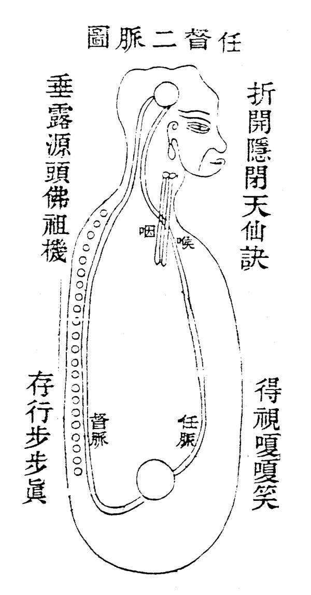

金 仙 证 论
任 督 二 脉 图 第 十 七

华阳曰：此图直泄玄机。实愿得药之士不失运行之路。丹道最秘，非余之敢妄泄也。古圣虽无图，却有言存留，奈何不全之过耳。又因旧说谓督脉在脊骨外，而任脉止于上下唇，此二说皆俗医之妄指，岂知仙家说任督，实亲自在脉中所行过，以为证验，非但行一回也。金丹神�胖�元妙必要在脉中所行过数百回，方得成就。谬妄不但俗医乱指，今之修元者，亦此谬妄乱指，愈加纷纷。苟不亲自领会境遇，妄亿猜指，浅学信受，误丧厉志，岂不痛哉！故余将师所授之诀，以亲自领会之熟境尽画图以证其非，然而此图一出，游方之士与那假道学则无容身之地。